1060E40 supplementary pressure pump - r r
- Path
- Procedures > 10 ENGINE > 1060 DIESEL FUEL INJECTION > 1060E diesel pressure pump > 1060E40 supplementary pressure pump - r r
- Kind
- repair procedure (removal / refitting; the operation number is the code)
- Applies to
- all engines; all production periods
- Interactive page
- https://sloeber94.github.io/elrnDB-fDbl/en/#/2584492
Applies to: all engines; all production periods
 Removing
Removing
 Refitting
RefittingProceed with the removal 5530B10 battery - r+r .
Proceed with the removal 5530B52 Battery DRIP TRAY/SUPPORT - R.R. .
Proceed with the removal 4450B12 front or rear wheels (two) - r+r .
Proceed with the removal 1044B10 fuel filter assembly - r + r or replace .
Proceed with the removal 7210E22 R.R. WINDSCREEN BASE TRIM .
Proceed with the removal 7055B54 under-engine guard - r r .
Proceed with the removal 7210E10 R.R. FRONT BUMPER .
Drain the air conditioning system 5040A10 Air conditioning refrigerant CIRCUIT - Draining and Refilling .
Proceed with the removal 4130B10 power steering fluid resevoir r r .
Proceed with the removal 1088B10 engine cooling tank - r + r .
Proceed with the removal 1004B10 POWER UNIT WITH MANUAL GEARBOX - R.R .
1. Working at the bench, undo the bolt (1a) and the nut (1b) and remove the engine oil dipstick tube (1c) complete with dipstick.
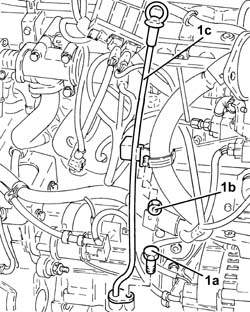
Applies to: all engines; all production periods
1. Disconnect the electrical connection for the cam angle sensor.
 | Name | Connector |
|---|---|---|
1 | Timing sensor | K47 |
2. Disconnect the electrical connection from the solenoid on the vacuum tank.
| Name | Connector |
|---|---|---|
2 | Butterfly casing solenoid valve | L62 |
Move the electrical wiring to the side.
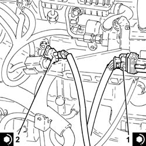
Applies to: all engines; all production periods
1. Adjust the moving tensioner to loosen the engine components single drive belt tension.
2. Remove the engine components single drive belt.
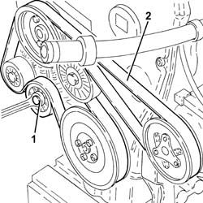
Applies to: all engines; all production periods
1. Open the cover (1a), undo the nuts (1b) and disconnect the electrical connections (1c) for the alternator.
| Name | Connector |
|---|---|---|
1c | Alternator | A10 |
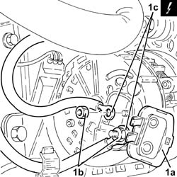
Applies to: all engines; all production periods
1. Undo the bolts (1a) and remove the alternator (1b).
2. Remove the spacer.
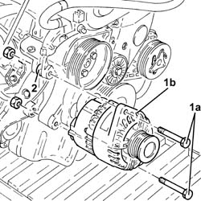
Applies to: all engines; all production periods
1. Undo the bolt (1a) and move the electrical wiring mounting bracket (1b) aside.
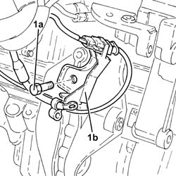
Applies to: all engines; all production periods
1. Undo the bolts (1a) and remove the intermediate drive shaft mounting (1b) complete with upper alternator bracket (1c).
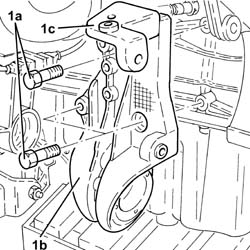
Applies to: all engines; all production periods
1. Undo the bolts (1a) and remove the crankshaft pulley (1b).
2. Undo the bolt (2a) and remove the single drive belt fixed tensioner (2b).
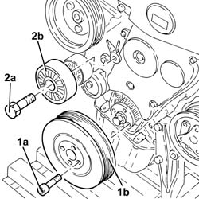
Applies to: all engines; all production periods
1. Undo the nuts (1a) and remove tool (1b) temporarily.
 | Name | Country |
|---|---|---|
1b | Mount | 1.860.625.000 |
2. Undo the nuts (2a) and remove the power unit timing side rigid engine mount (2b).
Fit the tool again and secure with nuts.
| Name | Country |
|---|---|---|
- | Mount | 1.860.625.000 |
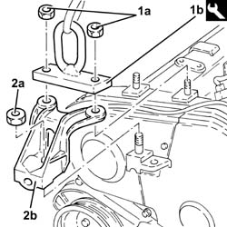
Applies to: all engines; all production periods
1. Undo the bolts (1a) and remove the timing gear covers (1b).
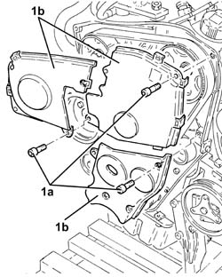
Applies to: all engines; all production periods
1. Adjust the drive pulley bolt and rotate the crankshaft until the timing marks line up (cylinder no. 1 at T.D.C.).
2. Check that the locating dowel on the timing belt drive pulley is facing downwards.
3. Loosen the nut (3a) for the timing belt moving tensioner and remove the timing drive belt (3b).
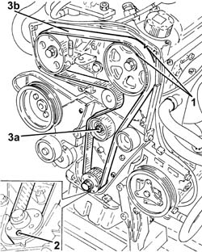
Applies to: all engines; all production periods
1. Screw two bolts in the appropriate seats to stop the rotation of the pressure pump pulley.
2. Undo the pressure pump pulley nut.
Remove the two bolts used to stop the rotation of the pressure pump pulley.
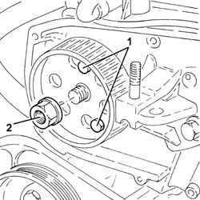
Applies to: all engines; all production periods
1. Remove the pressure pump pulley (1a) using the tool (1b).
| Name | Country |
|---|---|---|
1b | Extractor | 1.860.954.001 |
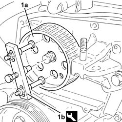
Applies to: all engines; all production periods
1. Release the fuel pipes from the fastenings on the air chamber.
2. Undo the bolts (2a) and remove the fuel return manifold pipe (2b), complete with pipes (2c).
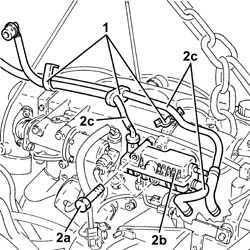
Applies to: all engines; all production periods
1. Disconnect the electrical connection from the fuel pressure regulator on the fuel pump.
| Name | Connector |
|---|---|---|
1 | Fuel pressure regulator | N77 |
2. Undo the connector for the pipe from the pressure pump to the fuel manifold (2a), manifold side, using tool (2b).
| Name | Country |
|---|---|---|
2b | Key | 1.870.671.000 |
3. Undo the connector for the pipe from the pressure pump to the fuel manifold, pump side, using a suitable commercial wrench.
4. Remove the pipe from the pressure pump to the fuel manifold.
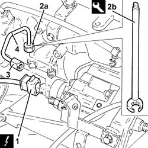
Applies to: all engines; all production periods
1. Undo nuts (1a) and remove pressure pump (1b) from its mount.
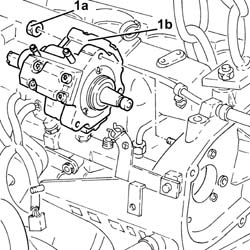
Applies to: all engines; all production periods
1. Undo nuts (1a) and remove tool (1b) temporarily.
| Name | Country |
|---|---|---|
1b | Mount | 1.860.625.000 |
2. Undo bolts (2a) and (2b) and remove pressure pump mount (2c).
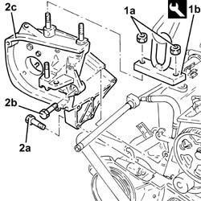
Applies to: all engines; all production periods
Refitting
Removing1. Place the pressure pump support (1a) back in its housing and secure it tightening the bolts (1b) and (1c) to the recommended torque.
 | Fastening | Component | Ø | Value (daNm) |
|---|---|---|---|---|
1b | Bolt | INJECTION PRESSURE PUMP MOUNT | M8 | (Engine crankcase side) 2.3 ÷ 2.8 |
| Fastening | Component | Ø | Value (daNm) |
|---|---|---|---|---|
1c | Bolt | INJECTION PRESSURE PUMP MOUNT | M8 | (Cylinder head side) 2.3 ÷ 2.8 |
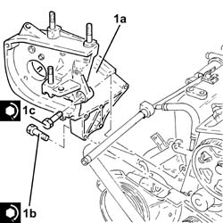
Applies to: all engines; all production periods
Fit the tool again and secure with nuts.
| Name | Country |
|---|---|---|
- | Mount | 1.860.625.000 |
1. Fit the clutch pump (1a) back in its housing and tighten the nuts (1b) to the specified torque.
| Fastening | Component | Ø | Value (daNm) |
|---|---|---|---|---|
1b | Nut | PRESSURE PUMP | M8 | (Support side) 2.3 ÷ 2.8 |
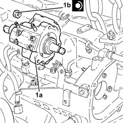
Applies to: all engines; all production periods
1. Place the pipe from the pressure pump to the single fuel manifold back in its housing and fix it using the connectors without tightening them.
2. Tighten the connector for the pipe from the pressure pump to the fuel manifold, pump side, to torque using a suitable commercial wrench
| Fastening | Component | Ø | Value (daNm) |
|---|---|---|---|---|
2 | Connector | PRESSURE PUMP LINE TO FUEL MANIFOLD | M12 | (Pressure pump side) 2.2 ÷ 2.4 |
3. Tighten the connector for the pipe from the pressure pump to the fuel manifold (3a), manifold side, to the recommended torque using a tool (3b).
| Fastening | Component | Ø | Value (daNm) |
|---|---|---|---|---|
3a | Connector | PRESSURE PUMP LINE TO FUEL MANIFOLD | M14 | (Fuel manifold side) 2.2 ÷ 2.4 |
| Name | Country |
|---|---|---|
3b | Key | 1.870.671.000 |
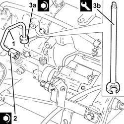
Applies to: all engines; all production periods
Connect the electrical connection to the pressure regulator on the pressure pump.
Place the fuel return manifold pipe back in its housing and secure it using the bolts.
Secure the fuel delivery pipe to the fastenings on the air chamber.
Refit the pressure pump drive pulley in its seat and secure with the nut without tightening.
Screw two bolts in the appropriate seats to stop the rotation of the pressure pump pulley.
1. Tighten the nut (1a) securing the pressure pump drive pulley to the recommended torque, using tool (1b).
| Fastening | Component | Ø | Value (daNm) |
|---|---|---|---|---|
1a | Nut | PRESSURE PUMP CONTROL PULLEY | M14 | (Pressure pump side) 4.5 ÷ 5.5 |
| Name | Country |
|---|---|---|
1b | Spanner | 1.857.167.000 |
Remove the two bolts used to stop the rotation of the pressure pump pulley.
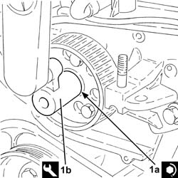
Applies to: all engines; all production periods
1. Undo the bolt for the crankcase front cover shown in the diagram.
Temporarily fit the timing drive belt on the drive pulley.
2. Fit the tool (2a) and secure it with gauged bolts (2b)
| Name | Country |
|---|---|---|
2a | Template | 1.860.905.000 |
| Name | Country |
|---|---|---|
2b | Calibrated screw | 1.860.905.010 |
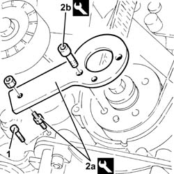
Applies to: all engines; all production periods
1. Check that the timing references coincide.
2. Completely fit the timing belt.
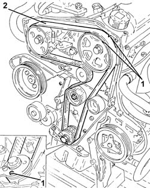
Applies to: all engines; all production periods
1. Use a screwdriver for leverage in the opening (1a) so that the reference on the tensioner (1b) is aligned with the opening reference (1c) and, in this position, tighten the moving tensioner nut (1d) to the recommended torque.
| Fastening | Component | Ø | Value (daNm) |
|---|---|---|---|---|
1d | Nut | MOBILE TIMING TENSIONER | M8 | 2.3 ÷ 2.8 |
Remove the tools.
| Name | Country |
|---|---|---|
- | Template | 1.860.905.000 |
| Name | Country |
|---|---|---|
- | Calibrated screw | 1.860.905.010 |
Tighten the bolt for the crankcase front cover previously removed.
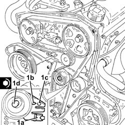
Applies to: all engines; all production periods
Rotate the crankshaft through two revolutions.
Check once again that the timing references and the tensioning references on the mobile timing tensioner coincide.
Place the protective timing covers back in their housings and secure them using the bolts.
Undo the nut and remove the tool temporarily.
| Name | Country |
|---|---|---|
- | Mount | 1.860.625.000 |
1. Refit the gearbox side power unit rigid support (1a) in its seating and secure with nut (1b).
2. Refit tool (2a) and secure with nuts (2b).
| Name | Country |
|---|---|---|
2a | Mount | 1.860.625.000 |
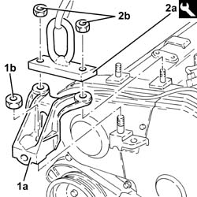
Applies to: all engines; all production periods
1. Place the engine components single drive belt fixed tensioner (1a) back in its housing and fix it tightening the bolts (1b) to the recommended torque.
| Fastening | Component | Ø | Value (daNm) |
|---|---|---|---|---|
1b | Bolt | FIXED SINGLE SERVICE BELT TENSIONER | M8 | 2.3 ÷ 2.8 |
2. Place the crankshaft pulley (2a) back in its housing and ecure it tightening the nut (2b) to the recommended torque.
| Fastening | Component | Ø | Value (daNm) |
|---|---|---|---|---|
2b | Bolt | CRANKSHAFT PULLEY | M8 | (Drive pulley side) 2.3 ÷ 2.8 |
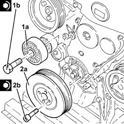
Applies to: all engines; all production periods
1. Refit intermediate drive shaft (1a) complete with upper alternator mount bracket (1b) and secure it by tightening bolts (1c) to the specified torque.
| Fastening | Component | Ø | Value (daNm) |
|---|---|---|---|---|
1c | Bolt | FRONT DRIVE SHAFT BEARING MOUNT | M10 | (Crankcase side) 4.5 ÷ 5.5 |
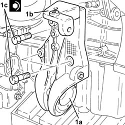
Applies to: all engines; all production periods
Place the intermediate drive shaft mount back in its housing and secure it using the bolt.
1. Place the alternator (1a), complete with spacer (1b), back in its housing and secure it by tightening bolts (1c) to the recommended torque.
| Fastening | Component | Ø | Value (daNm) |
|---|---|---|---|---|
1c | Bolt | ALTERNATOR ASSEMBLY | M10 | (Support side) 4.4 ÷ 5.5 |
| Fastening | Component | Ø | Value (daNm) |
|---|---|---|---|---|
1c | Bolt | ALTERNATOR ASSEMBLY | M12 | (Support side) 6.3 ÷ 7.7 |
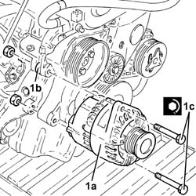
Applies to: all engines; all production periods
Connect the electrical connections to the alternator, secure them using the nuts and close the cover.
Adjust the moving tensioner and fit the engine components single drive belt.
Connect the electrical connection to the solenoid on the vacuum tank.
Connect the electrical connection for the cam angle sensor.
Place the complete engine oil dipstick tube back in its housing and secure it with the nut and bolt.
Proceed with the refitting 1004B10 POWER UNIT WITH MANUAL GEARBOX - R.R .
Proceed with the refitting 1088B10 engine cooling tank - r + r .
Proceed with the refitting 4130B10 power steering fluid resevoir r r .
Refill the air conditioning system 5040A10 Air conditioning refrigerant CIRCUIT - Draining and Refilling .
Proceed with the refitting 7210E10 R.R. FRONT BUMPER .
Proceed with the refitting 7055B54 under-engine guard - r r .
Proceed with the refitting 7210E22 R.R. WINDSCREEN BASE TRIM .
Proceed with the refitting 1044B10 fuel filter assembly - r + r or replace .
Proceed with the refitting 4450B12 front or rear wheels (two) - r+r .
Proceed with the refitting 5530B52 Battery DRIP TRAY/SUPPORT - R.R. .
Proceed with the refitting 5530B10 battery - r+r .
Topics linked from this page (11)
- 1004B10 POWER UNIT WITH MANUAL GEARBOX - R.R
- 1044B10 fuel filter assembly - r + r or replace
- 1088B10 engine cooling tank - r + r
- 4130B10 power steering fluid resevoir r r
- 4450B12 front or rear wheels (two) - r+r
- 5040A10 Air conditioning refrigerant CIRCUIT - Draining and Refilling
- 5530B10 battery - r+r
- 5530B52 Battery DRIP TRAY/SUPPORT - R.R.
- 7055B54 under-engine guard - r r
- 7210E10 R.R. FRONT BUMPER
- 7210E22 R.R. WINDSCREEN BASE TRIM